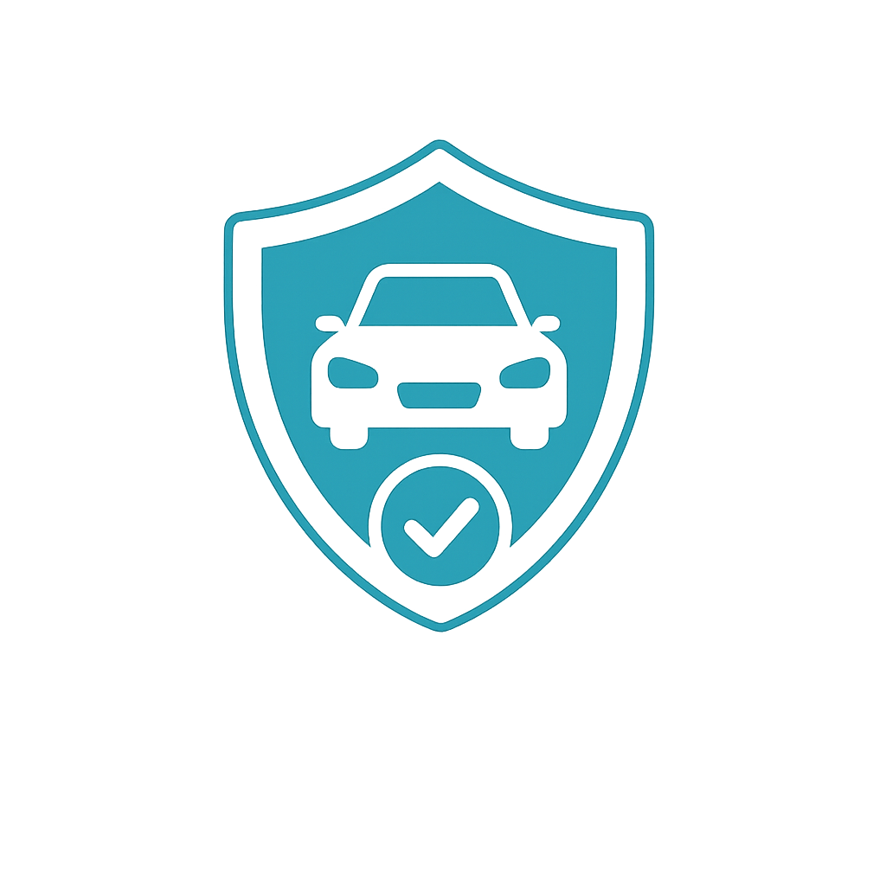
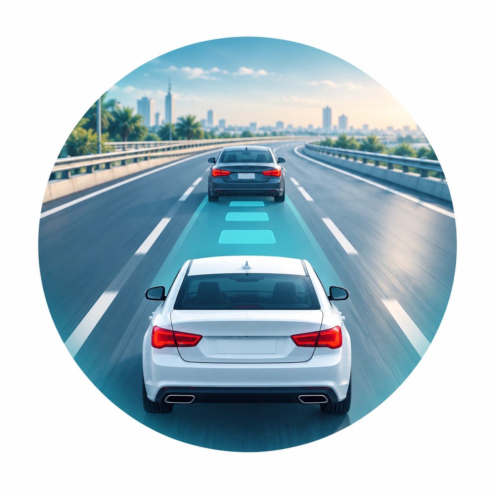
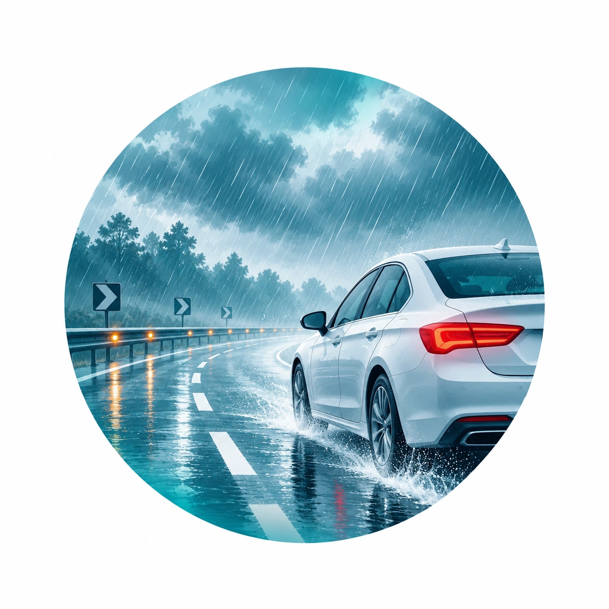
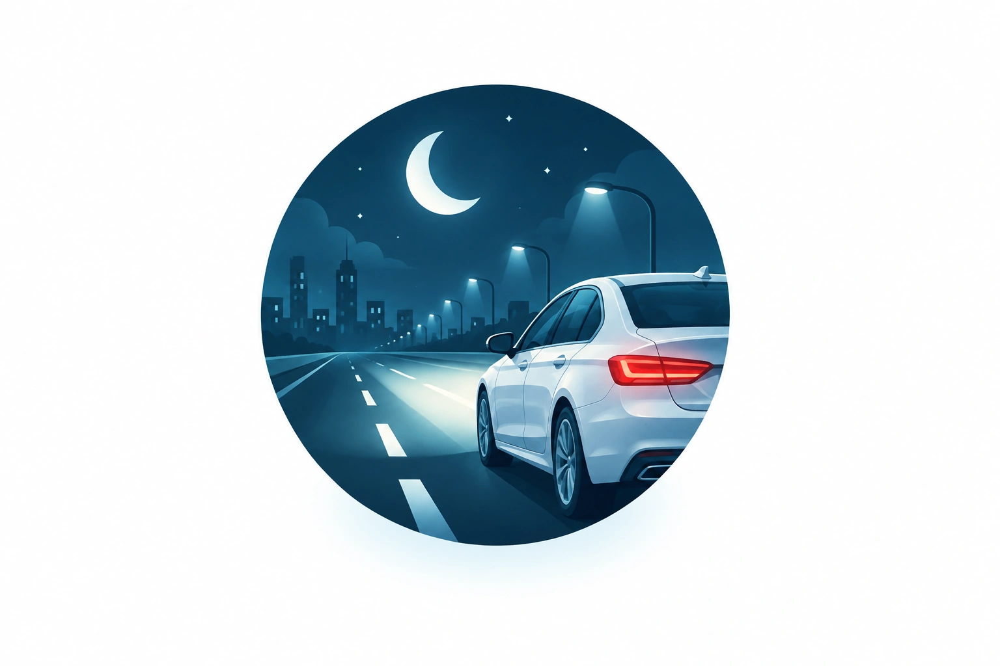
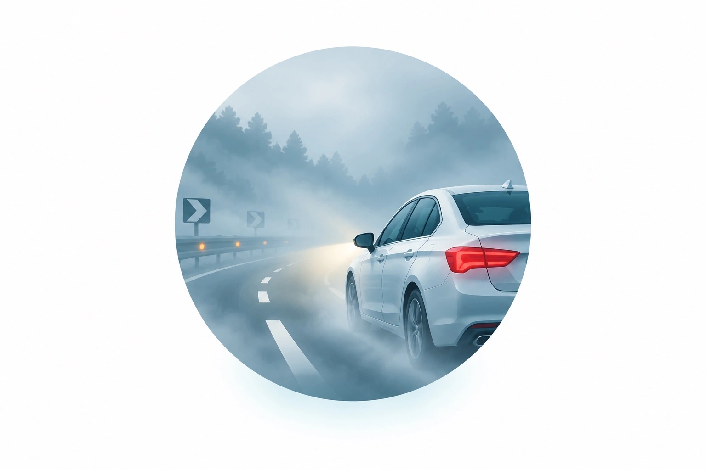
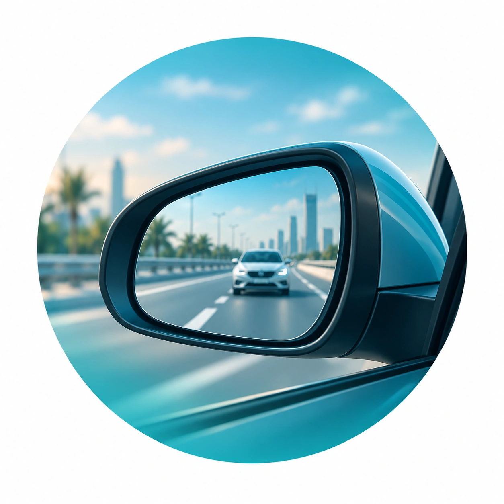
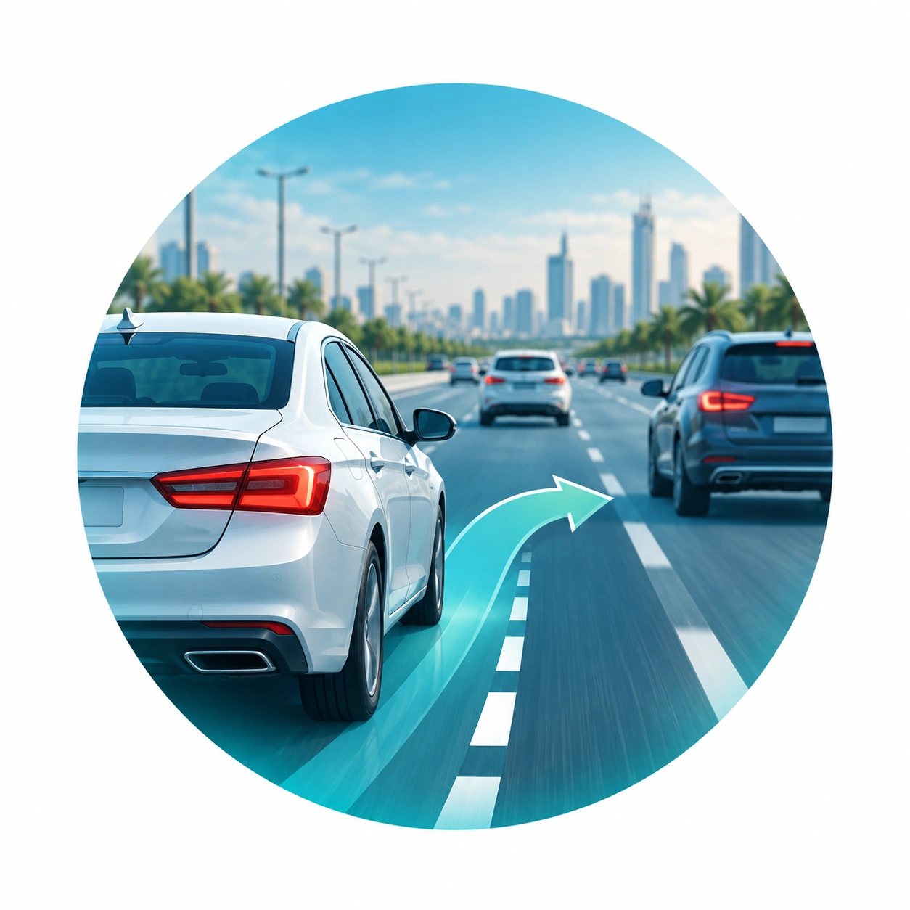
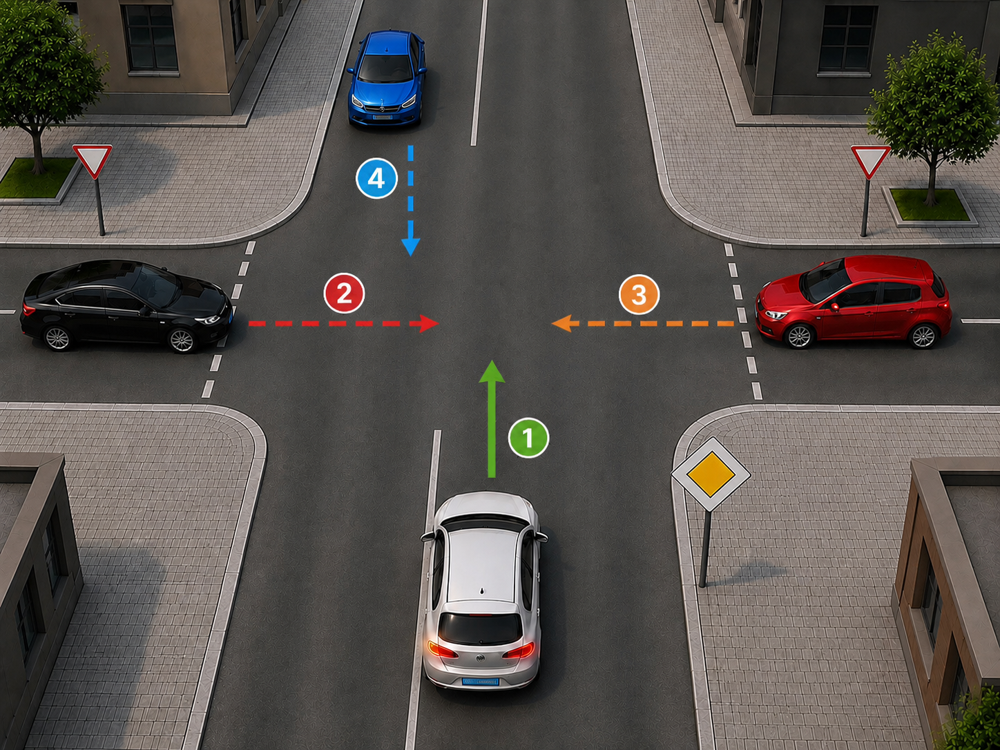
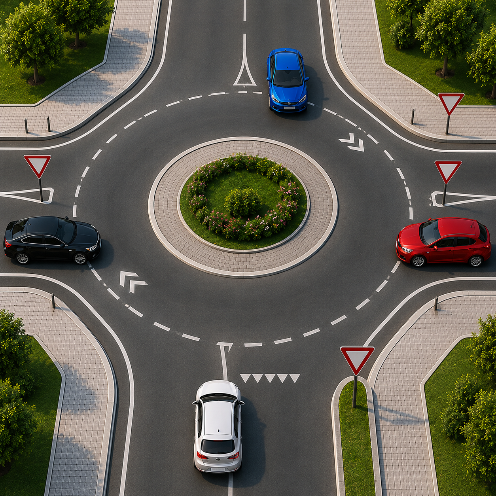
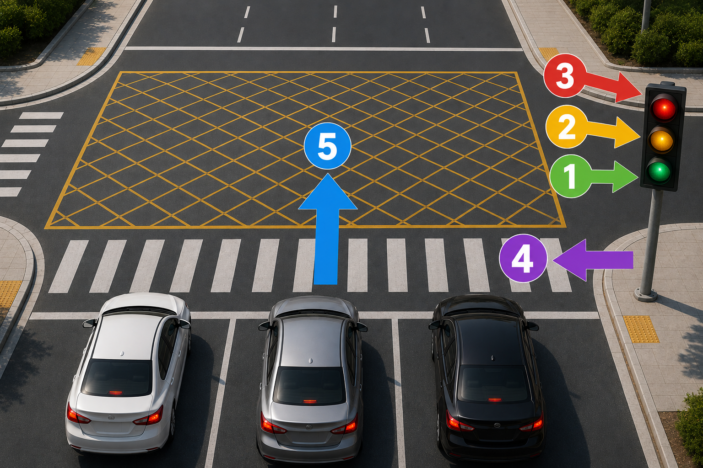

تكنولوجيا القيادة

مهارات عملية ونصائح أساسية تساعدك على القيادة بثقة وأمان في كل الظروف.

قاعدة الثواني الثلاث: اترك مسافة زمنية لا تقل عن 3 ثوانٍ بينك وبين السيارة أمامك. تزيد هذه المسافة في الأجواء الماطرة أو الطرق السريعة.

خفف السرعة، تجنب الفرملة المفاجئة، واستخدم المصابيح الأمامية لزيادة الرؤية. احذر من "التزحلق المائي" عند برك المياه.

تأكد من نظافة الزجاج والمصابيح. قلل من سرعة القيادة، واستخدم الإضاءة المنخفضة عند وجود سيارات قادمة لتجنب إبهار السائقين الآخرين.

شغل أضواء الضباب (إن وجدت)، حافظ على مسافة أكبر من المعتاد، واستخدم علامات الطريق كدليل لك بدلاً من أضواء السيارة التي أمامك.

اضبط المرايا الجانبية والوسطى قبل الانطلاق. تذكر دائماً: "نظرة سريعة، إشارة، ثم حركة" عند تغيير المسار.

لتجاوز أي جسم أمامك، اتجه دائماً من جهة اليسار وتقدم للأمام، ثم وجّه تركيزك نحو المرايا اليمين. وإذا كانت المركبة المتجاوزة سيارة، تأكد من مشاهدة جميع إنارات السيارة بالكامل في المرايا قبل العودة للمسار أو إتمام التجاوز بشكل صحيح وآمن.
تكون القيادة على الجهة اليمنى من الطريق.
يجب على قائدي المركبات الالتزام بالعلامات والإشارات المرورية وعلامات الطريق والتعليمات الصادرة من الجهات المختصة وفق أحكام نظام المرور.
يستخدم المشاة الأماكن المخصصة لهم وفق ما تحدده اللوائح والأنظمة المرورية.
أثناء سير المركبة يجب على السائق والركاب استخدام أحزمة الأمان، ويجب أن يكون الأطفال في مقاعد الأطفال المخصصة لهم.
تكون الأولوية لمركبات الطوارئ أثناء أداء مهامها والمواكب الرسمية، مع مراعاة أن يلتزم قائدوها بسلامة الآخرين.
لا يجوز تجاوز حافلات المدارس المتوقفة لإنزال الركاب أو صعودهم، وذلك وفق الشروط التي تحددها اللوائح.
يجب الالتزام بالعلامات والإشارات وعلامات الطريق والتعليمات الصادرة من الجهات المختصة، باعتبارها جزءًا من قواعد السير على الطريق.
يجب الالتزام بالإشارات والعلامات المرورية والتعليمات الموضوعة لتنظيم حركة السير، بما في ذلك ما يصدر عن الجهات المختصة لتنظيم الطريق.
عند وجود تنظيم مؤقت لحركة السير، يجب الالتزام بالمسار المحدد والعلامات والتعليمات الموجودة على الطريق.
يجب عدم العبث بعلامات الطريق أو العواكس أو الإشارات أو إزالتها أو نقلها بطريقة تؤثر في وضوحها أو معناها.

طريق الأولوية: السيارة البيضاء تسير على طريق الأولوية، لذلك لها الأولوية في المرور أولًا.
أعطِ الأفضلية: السيارة السوداء أمامها علامة أعطِ الأفضلية، لذلك يجب أن تفسح الطريق للمركبات الموجودة على طريق الأولوية.
أعطِ الأفضلية: السيارة الحمراء أمامها أيضًا علامة أعطِ الأفضلية، لذلك يجب أن تفسح الطريق للمركبات الموجودة على طريق الأولوية.
أولوية السير المستقيم: إذا كانت المركبات على نفس الطريق أو تساوت في الأولوية، فإن المركبة التي تسير مستقيمة تكون أولى بالمرور من المركبة التي تنعطف.

الأولوية لمن بداخل الدوار: المركبات التي تسير داخل الدوار لها الأولوية، لذلك يجب على السيارة الزرقاء مواصلة السير أولاً.
أعطِ الأفضلية: قبل دخول الدوار يجب إفساح الطريق لجميع المركبات الموجودة داخله، ثم الدخول عندما يصبح المسار آمناً.

الإشارة الخضراء: يمكنك العبور بعد التأكد من خلو التقاطع.
الإشارة الصفراء: استعد للتوقف، ولا تعبر إذا كان بإمكانك التوقف بأمان.
الإشارة الحمراء: توقف قبل خط التوقف ولا تتجاوز الإشارة.
خطوط المشاة: يجب الوقوف قبل خطوط المشاة وعدم التوقف فوقها حفاظًا على سلامة المشاة.
منطقة التقاطع (الصندوق الأصفر): لا تدخلها إذا كان الطريق أمامك مزدحمًا حتى لو كانت الإشارة خضراء.
المسؤولية عن الحادث: يكون السائق مسؤولًا عن الحوادث المرورية الناتجة عن الإهمال أو قلة الاحتراز أو عدم التقيد بالأنظمة، وفق ما تحدده اللوائح.
أنواع الحوادث: تصنف الحوادث المرورية إلى حوادث مرورية بسيطة وحوادث مرورية جسيمة، وفق ما تحدده اللوائح.
إجراءات الحادث: تتولى الجهة المختصة الإجراءات النظامية المتعلقة بالحادث، بما في ذلك جمع الأدلة وإحالة ما يلزم وفق الأحكام النظامية.
يجب استخدام المركبة وفق المتطلبات النظامية المتعلقة بسلامتها وصلاحيتها للسير على الطريق.
يجب المحافظة على تجهيزات المركبة وعلاماتها بما يحقق متطلبات السلامة والأنظمة المرورية.
يجب عدم استخدام المركبة بطريقة تعرض مستخدمي الطريق للخطر، والالتزام بالأنظمة والتعليمات المرورية.